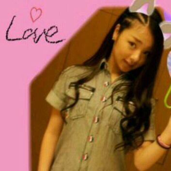

| 2012/05 06 Sun | 川村真洋 一気に質問返しです*・ω ・*ろってぃー♪ |

hello☆!!
和田まあ,,,,
ぢゃなくて
まひろってぃー♪
ですぅ〜〜＼(^o^)／
質問返し続き(⌒‐⌒)
★前にプール行った時
何泳いだぁ?
☆何かねえ、
ほとんど歩いたりしてたぁ〜^^♪
中学の時の、水泳大会は
毎回、背泳♪に選ばれてたω・*
あと、なんか分からんけど
碁石拾いが
めちゃくちゃ得意で
毎年やってました♪笑
★目大丈夫ぅ?
☆もう大丈夫っ^_^
外に行く時は帽子や
サングラスかけてたら
あまり目痛くならないんだ♪
★前、みさみさに
お風呂のぞかれたあ?
☆覗かれんかったω
良かったぁ〜^^笑
★皆さん、ろってぃーと
呼んでいるみたいだけど
何で?
☆まひろってぃー♪から
きてんのです^^
★自分より年下やのに
凄いしっかりしてる子とか
見ると、
なんか自分が情けなく
感じるのは自分だけぇ?
☆ん〜、その子が
しっかりし過ぎてるだけやから
あまり、気にする必要
ないってば〜〜(*^^*)
★いつもメンバーの
誕生日ケーキどんなん
食べるの?
☆苺のショートケーキが
多いよっ*・ω・*
ちなみに、まひろ、
ティラミスが大好きっω♪
★まひろってぃー♪様
元気でありますか?
☆あたくしは
いつでも元気でありますよっ>ω<V
★俺とろってぃーの
似てるとこってなんやろー?
大阪出身、いつも元気な所
かなあ?
☆そうだねっ^^
あと、名前だっ♪
★まあや、せいらりん、
ろってぃー、三人とも
ずっと乃木坂46でおってな?
☆うんっ^^♪
そんなん思ってくれはってて
嬉しいお気持ちね・ω・*〃
★さゆにゃん、ミキサーで
氷使って何作るんやろ?
☆ジュースを作るさいに
氷を使うとシャーベット
みたいになるみたいです´з`♪
★目標マイナス何キロ
ですか?
☆とりあえず
マイナス3キロです♪!
★戦隊名は
『乃木坂レンジャー☆』
かな?
☆はいっ、そうですぅ〜ω
かっくぅーだ！
番組で、乃木坂レンジャー
やりたい・〇・
★さゆにゃんの眼鏡って
だて眼鏡だったの?
☆どっちも持ってる^^
あとどっちも大きな
眼鏡さん♪
★せっかくなので、
決めセリフや決めポーズも
考えてくれませんか?
☆それまひろもずっと
思ってるんだぁぁ(⌒‐⌒)
さゆにゃんに聞こっ♪
★この前、実家に帰って
家族やサスケ
(ポメラニアンの愛犬)に
会えたのかな?
☆すぐ東京に帰らなきゃ
ダメだったから
実家によれなかったよ・〇・`
★故郷でのイベントだから
俺の応援は必要ないかも?
☆んなこと言わないで
ようっ(´・з・)
必要だようっ(ω)♪
★集合写真に誰だろう?
ってメンバーがいるんだけど、
気のせいかな?
☆気のせいだようっ(^-^)v
みんなメンバーです*・ω
★ラグビーやってる人って
どうですか?
☆体とかもたくましくて
かっこいいって
思います(*^^*)
★二時間も走ると
スタミナ付いたでしょ?
☆スタミナついて
二時間も走れるように
なったんやと思います・ω・´♪
★ミサミサより目ちかちか
しない?
☆しないですぅー(^з^)笑
今日はここまでっ*・ω・*
今日はレッスンと
テレビの収録です^з^
今日も１日頑張ろってぃー)))
あっ、ちなみに
新しい振り付けをやりましたω
早くライブしたいなっ♪♪
のし。